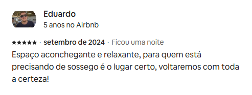
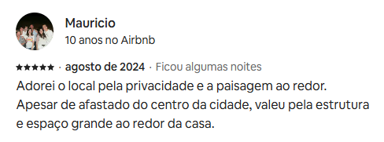
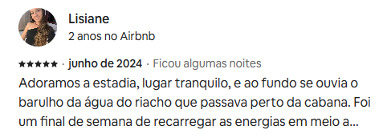

Sobre:
Estamos situados no bairro São José, nas furnas em Urubici/SC, um lugar de rara beleza repleto de araucárias, onde a estrada margeia um lindo rio. Um cenário deslumbrante, ideal para quem busca relaxamento e contato com a natureza. A região oferece trilhas ecológicas, passeios a cavalo e pesca, sendo um verdadeiro paraíso para os amantes do ecoturismo. Aqui, o ar fresco das montanhas e a tranquilidade do ambiente proporcionam um descanso revigorante. Em Urubici, você também pode explorar a rica história local e as festas típicas que celebram a cultura da Serra Catarinense. Venha desfrutar da paz e da beleza deste refúgio nas montanhas!
Alguns relatos dos nossos visitantes:



Entre em contato conosco!
MO&MOAFREEDOM
(48) 99999-9999
mo&moafreedom@gmail.com